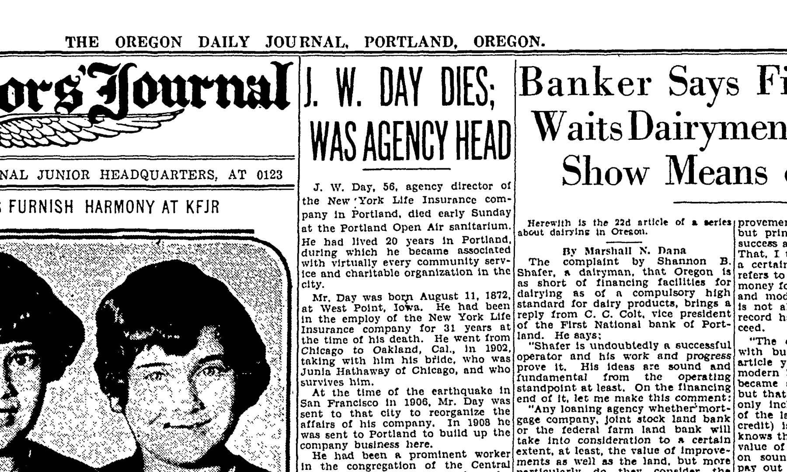
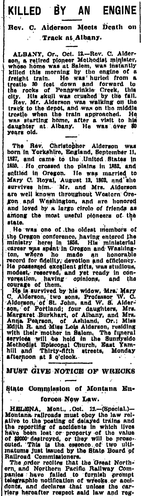

Mary Catharine Royal 1842–1928
Peter's great-great-grandmother by adoption.
Mary Catharine Royal was born on 25 Jan 1842 in Fox River, United States (according to an online family tree)1, the daughter of Charles Royal and Mary Ann Gearhart9. She married Christopher Alderson on 13 Aug 1862 in Portland, Multnomah County, Oregon, United States10,11. She died on 30 Dec 1928 in Portland, Multnomah County, Oregon, United States1,8 and was buried at Lincoln Memorial Park, Portland, Multnomah County, Oregon, United States (according to an online family tree)1.
Family
- Parents
- Charles Royal 1798–1878 and Mary Ann Gearhart 1802–1888 tradition
- Husband
- Christopher Alderson 1827–1907 · married on 13 Aug 1862 in Portland, Multnomah County, Oregon, United States10,11
- Children
- Winter Scott Alderson 1866–1933 tradition
Life events
| Event | Date | Place and details |
|---|---|---|
| Born | 25 Jan 1842 | Fox River, United States According to an online family tree1 |
| Lived | 1850 | Mazon, United States According to an online family tree1 |
| Lived | 1860 | Sandy Precinct, Portland, Multnomah County, Oregon, United States According to an online family tree1 |
| Married | 13 Aug 1862 | with Christopher Alderson Portland, Multnomah County, Oregon, United States10,11 |
| Lived | 1864 | Washington, United States2 |
| Lived | 1 Dec 1866 | Springwater, Oregon, United States According to an online family tree3 |
| Lived | 30 Apr 1869 | Oregon, United States4 |
| Lived | 1870 | Jackson County, Oregon, United States5 |
| Lived | 1870 | Oregon, United States According to an online family tree1 |
| Lived | 1872 | Oregon, United States6 |
| Lived | 1880 | Sheridan, Oregon, United States7 |
| Lived | 1880 | Sheridan, Oregon, United States According to an online family tree1 |
| Work | 1880 | Housekeeper According to an online family tree1 |
| Lived | 1900 | Salem Election Precinct 4, Oregon, United States According to an online family tree1 |
| Lived | 1910 | Portland, Multnomah County, Oregon, United States According to an online family tree1 |
| Lived | 8 Oct 1928 | Portland, Multnomah County, Oregon, United States According to an online family tree1 |
| Died | 30 Dec 1928 | Portland, Multnomah County, Oregon, United States1,8 |
| Buried | Lincoln Memorial Park, Portland, Multnomah County, Oregon, United States According to an online family tree1 |
Records


Sources
- FamilySearch Family Tree: Mary Catharine Royal (LR3M-1HS).
- Death record of William C. Alderson (b. 1864 Washington) & 1880 Census.
William C. Alderson: Birth 1864 @ Washington; Death 8 Oct 1928 @ Portland, Washington, Oregon, United States; ParentChild: Christopher Alderson, Mary Royal
Lived in Washington Territory with her husband Rev. Christopher Alderson in 1864 when their eldest son William C. Alderson was born there.
- FamilySearch Family Tree: Winter Scott Alderson (L51K-5YQ).
Winter Scott Alderson (L51K-5YQ): Birth 1 December 1866 @ Springwater, Clackamas, Oregon, United States
Resided at Springwater, Clackamas County, Oregon on 1 December 1866 when her son Winter Scott Alderson was born there.
- Obituary of Miss Edith Ruth Alderson, May 1949.
Miss Edith Ruth Alderson: Birth 30 Apr 1869 @ Empire; Death 29 Apr 1949; Rev C Alderson (Occupation=Rev); Mary Royal Alderson
Lived at Empire, Coos County, Oregon when her daughter Edith Ruth Alderson was born there on 30 April 1869.
- Household of Christopher Alderson, Jackson, Oregon.
Mary C Alderson: Race = White; Birth 1841 @ Illinois; Census 1870 @ Jackson, Oregon, United States; Age=29y
1870 US census, Jackson County, Oregon: Mary C. Alderson, age 29, born Illinois, in the household of her husband Christopher Alderson (41) with children Charles W. (6), Winter S. (4), and Edith R. (1).
- Death record of Anna Alderson Pearson, 30 Oct 1947.
Anna Alderson Pearson: Birth 1872 @ Wilbur, Oregon; Death 30 Oct 1947 @ Portland, Washington, Oregon, United States; ParentChild: Christopher Alderson (Birth @ Yorkshire, England), Mary Catherine Royal (Birth @ Cook, Illinois)
Resided at Wilbur, Douglas County, Oregon in 1872 when her daughter Anna Alderson Pearson was born there.
- Household of Christopher Alderson, Sheridan, Yamhill, Oregon.
Mary C. Alderson: Race = White; Occupation = Keeping House; Birth 1842 @ Illinois, United States; Census 1880 @ Sheridan, Yamhill, Oregon, United States; RelationshipToHead=Wife; Age=38
1880 US census, Sheridan, Yamhill County, Oregon: Mary C. Alderson, age 38, keeping house, born Illinois, wife of Christopher Alderson (52, minister), with six children (including Winter S., 14) and her widowed mother Mary A. Royal (79).
- Mrs. Mary Alderson, Pioneer of Oregon, Dies, Oregon Journal (Portland, Oregon), 31 December 1928, p. 4.
.MRS. MARY ALDEKSON, PIONEER OF OREGON, DIES Mrs. Mary Royal Alderson, 80, died early Sunday at her home at No. 1208 Belmont street of injuries she suffered at midnight Friday when she fell to the floor In her room. Physicians said she did not recover consciousness after her fall. Mrs. Alderson was the widow of the late Rev. Christopher P. Alderson, pioneer circuit riding minister of the Methodist Episcopal church. She was born in Cook county, 111., January 26, 1842, and crossed the plains with her parents, Mr. and Mrs. Charles Royal, In 1852, settling at Astoria. The Royal family moved later to a donation land claim near Gresham, taking with them the daughter, Mary, who grew up there and met and married the Rev. Alderson, spending the next 40 years with him In his pastorates throughout Western Oregon and Washington. She is survived by one son, W. S. Alderson, and four daughters, two of whom. Miss Edith Alderson and Mrs. Lois Huggins, live Dr Portland. Two other daughters live In Albany, Mrs. Anna Pearson and Mrs. Marguerite Burkhart. A brother, William Royal of Elma, Wash., also survives. Funeral services will be held nt 30 a. m. Wednesday at Sunnyslde Methodist church, where Mrs. Alderson had her membership at the time of her death. Interment will be at the Lincoln Park Memorial cemetery.
Translation: MRS. MARY ALDERSON, PIONEER OF OREGON, DIES / Mrs. Mary Royal Alderson, 86, died early Sunday at her home at No. 1208 Belmont street of injuries she suffered at midnight Friday when she fell to the floor in her room. Physicians said she did not recover consciousness after her fall. Mrs. Alderson was the widow of the late Rev. Christopher P. Alderson, pioneer circuit riding minister of the Methodist Episcopal church. She was born in Cook county, Ill., January 26, 1842, and crossed the plains with her parents, Mr. and Mrs. Charles Royal, in 1852, settling at Astoria. The Royal family moved later to a donation land claim near Gresham, taking with them the daughter, Mary, who grew up there and met and married the Rev. Alderson, spending the next 40 years with him in his pastorates throughout Western Oregon and Washington. She is survived by one son, W. S. Alderson, and four daughters, two of whom, Miss Edith Alderson and Mrs. Lois Huggins, live in Portland. Two other daughters live in Albany, Mrs. Anna Pearson and Mrs. Marguerite Burkhart. A brother, William Royal of Elma, Wash., also survives. Funeral services will be held at 10 a. m. Wednesday at Sunnyside Methodist church, where Mrs. Alderson had her membership at the time of her death. Interment will be at the Lincoln Park Memorial cemetery.
Died early Sunday, 30 December 1928, at her home at 1208 Belmont Street, Portland, Oregon, of injuries suffered at midnight Friday, 28 December 1928, when she fell to the floor in her room; widow of the late Rev. Christopher P. Alderson, pioneer circuit-riding minister of the Methodist Episcopal church; born in Cook County, Illinois, 26 January 1842; crossed the plains with her parents, Mr. and Mrs. Charles Royal, in 1852, settling first at Astoria and later on a donation land claim near Gresham; survived by son W. S. Alderson of Portland, daughters Miss Edith Alderson and Mrs. Lois [Joseph] Huggins of Portland, and Mrs. Anna [W. A.] Pearson and Mrs. Marguerite [R. G.] Burkhart of Albany, Oregon, and brother William Royal of Elma, Washington; funeral Wednesday, 2 January 1929 at 10 a.m. at Sunnyside Methodist Episcopal Church (Snook & Whealdon, directors), with interment in the family plot at Lincoln Memorial Park Cemetery.
- FamilySearch Family Tree: Mary Catharine Royal (LR3M-1HS), parents.
- Killed By An Engine: Rev. C. Alderson Meets Death on Track at Albany, The Sunday Oregonian (Portland, Oregon), 13 October 1907, p. 28.
He was married to Mary C. Royal, August 13, 18G2, nnd'a lie survives him.
Translation: He was married to Mary C. Royal, August 13, 1862, and she survives him.
Married the Rev. Christopher Alderson on 13 August 1862; resided in Salem, Oregon in October 1907 with daughters Miss Edith R. Alderson and Miss Lola [Lois] Alderson when her husband was killed by a train in Albany, Oregon.
- FamilySearch Family Tree: Reverend Christopher Alderson (LR39-MVR).